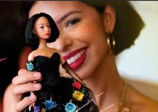

La cantante de música regional mexicana Ángela Aguilar presentó en sus redes sociales una muñeca a su imagen y semejanza y con la estética de la icónica Barbie, como una iniciativa dedicada a las niñas latinas. “A mí me encantan las muñecas y siento que son uno de los instrumentos con los que aprendemos las cosas con más felicidad”, dijo Aguilar en un video en su cuenta de YouTube, en el que anunció el lanzamiento de la muñeca qu eya está a la venta. La idea de la artista de 16 años es que las pequeñas “aprendan más de las tradiciones mexicanas y latinas” a través del juguete, que fue diseñado para que se pareciera lo más posible a ella. La adolescente es una de las artistas femeninas más destacadas del mundo de la ranchera y forma parte de la dinastía Aguilar, a la que pertenecen sus abuelos Antonio Aguilar y Flor Silvestre y su padre Pepe Aguilar, considerado uno de los principales exponentes actuales de la música del mariachi. Ángela Aguilar escogió vestir a la muñeca con el traje que llevó en la ceremonia de los Latin Grammys de 2018, cuando fue nominada como mejor nuevo artista y mejor disco de ranchera/mariachi por su producción Primero soy mexicana. “Quise lanzarla con ese traje porque ese vestido es muy icónico”, indicó al recordar que también llevaba puesto el vestido negro con flores de colores diseñado por Diego Medel Fashion, cuando interpretó La Llorona en el escenario de los Latin Grammy en Las Vegas. Sin embargo, prometió que en los próximos meses también sacará una línea de atuendos para que las niñas puedan vestir a su muñeca de diferentes formas. Para ella, es importante que las chiquitas “entiendan que todos lucimos diferentes, tenemos facciones y colores distintos y somos todas hermosas”. La muñeca que tiene un valor de 35 dólares estará a la venta, inicialmente solo en México, a partir del 7 de septiembre, a través de la tienda en internet de la artista, que también ofrece prendas para vestir como sudaderas y camisetas.
A.A.A. —todos los derechos reservados ©